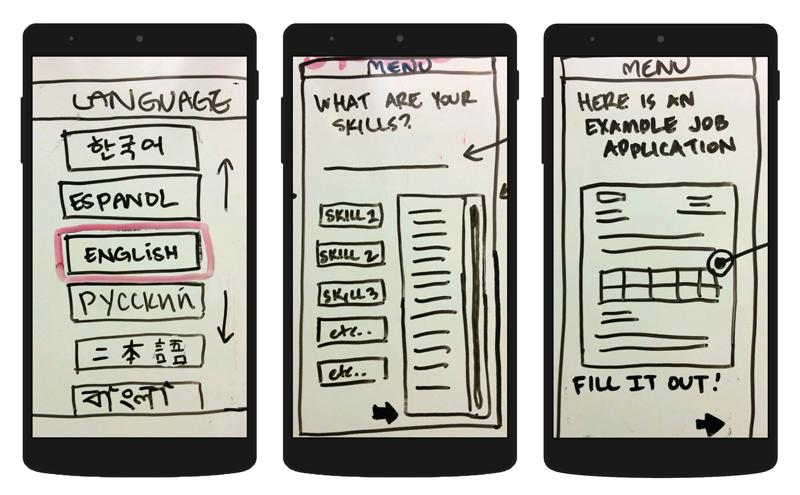
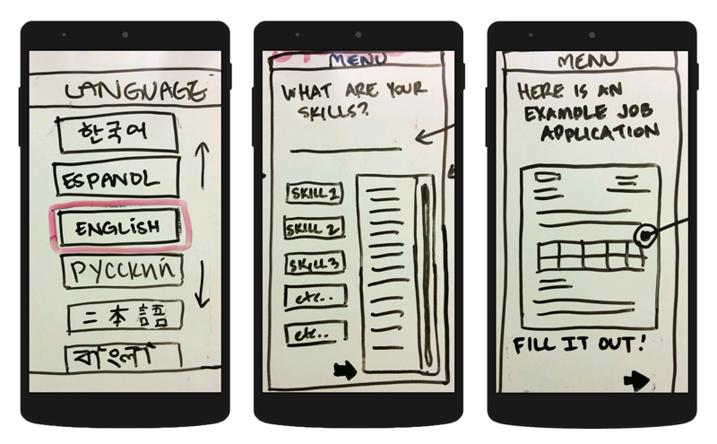

Initial Prototype
I initally created a prototype using Marvel App to take pictures of wireframes we had drawn up on the whiteboard. This worked well for initial user testing to get great feedback.
Latest Prototype

{{ page.description|markdownify }}
I initally created a prototype using Marvel App to take pictures of wireframes we had drawn up on the whiteboard. This worked well for initial user testing to get great feedback.
